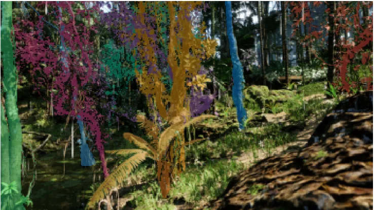
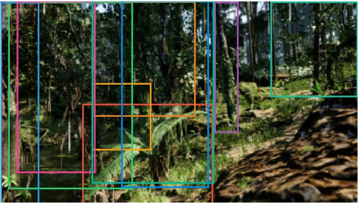

Home / Research / Thesis
Multitask learning for tree instance segmentation and diameter estimation from RGB-D imagery
Code (GitHub) Extended summary of the paper (PDF) SPREAD dataset (Feng et al., 2025)
- Test AP50
- 62.29%species-aware instance segmentation
- Diameter RMSE
- 7.62 cmend-to-end, on detected trees
- Effect of depth
- +12.92 AP50 pointsboth arms trained from scratch
- Data
- SyntheticUnreal Engine 5 renders (SPREAD)
00Summary
Can one photograph, taken by a field crew standing under the canopy, replace a diameter tape and a species guidebook? I trained a single RGB-D network that segments individual trees, classifies their species and estimates diameter at breast height (DBH), and measured honestly where it works and where it does not.
The final model reaches 62.29% test AP50 for species-aware segmentation, with no measurable segmentation cost from adding the diameter task. Evaluated end-to-end on its own detections, it returns a diameter for 27.1% of eligible test trees (1,690 of 6,233) with a 7.62 cm RMSE. In a controlled comparison where both models are trained from scratch and differ only in channel count, adding depth raises AP50 by 12.92 points. Detection recall falls with camera distance, from 82.4% within 5 m to 34.5% beyond 30 m, while species accuracy among detected trees stays at 98.9% or higher.
01The inventory problem
Forest inventory turns standing trees into per-tree records, chiefly species and trunk diameter, that carbon stock estimates, biodiversity indices and timber yield models are built from. DBH enters allometric biomass equations directly, so an error in diameter propagates into every downstream carbon figure. In Indonesian forests and agroforestry systems these records are still mostly collected by hand with diameter tapes. Cost scales with the number of trees rather than the area surveyed, and species identification needs skilled labour.
Terrestrial laser scanning recovers trunk geometry precisely but costs too much for routine inventory in much of the region. Image-based methods use cheap cameras, but most work close to a single trunk that the operator has chosen. The harder setting is a whole scene seen from where a field crew actually stands: trees occlude each other, and apparent size varies by more than an order of magnitude with distance. This thesis asks whether one network can deliver both measurements there, and where it fails.
02The model
The architecture builds on MaskDINO, a query-based instance segmentation model, with a FocalNet-L backbone. The input convolution is widened from three to four channels so that depth enters as an input. A second head estimates diameter from backbone features at the image row that corresponds to breast height.

res2 feature as the segmentation branch through a stop-gradient, so its loss never reshapes the backbone. Depth enters twice: as an input channel, and as the geometry that converts pixel width into physical width.The diameter head uses depth to find the image row whose back-projected height is closest to 1.3 m, isolates the trunk columns nearest the camera in that row, and computes a purely geometric diameter from pixel width and distance. That value is both reported as a baseline and supplied to a small network that regresses the final diameter together with learned features and the species. The geometric baseline alone is about a factor of two worse than the learned head.
03Data and experimental design
Training and evaluation use SPREAD, a synthetic below-canopy dataset rendered in Unreal Engine 5 (Feng, She and Keshav, 2025). A virtual camera about 2 m above ground looks laterally into plantation and rainforest scenes, giving a colour image, a per-pixel depth map, instance masks, a species label and, for a subset, a recorded DBH. Thirteen species are used for segmentation; diameter is supervised on the eleven that carry recorded DBH. The split is by rendered scene, not by image, so the same tree never appears on both sides. The test split has 7,925 annotated tree instances. I trained and evaluated on a SLURM-managed HPC cluster with NVIDIA L40S GPUs.
Controlling for pretraining
RGB and RGB-D are usually compared with the RGB model initialised from ImageNet and the RGB-D model trained from scratch, because a four-channel stem cannot inherit three-channel weights. That mixes depth with initialisation. In the paper, pretraining raised the RGB model's AP50 by 4.29 points but lowered the RGB-D model's, because ImageNet features that help a three-channel input work against a four-channel one. A comparison with both arms pretrained would report a depth advantage of only 0.91 points. Only with pretraining removed from both arms does the 12.92-point effect appear, so every depth comparison here trains both arms from scratch and varies only the channel count.
04Results
Depth helps in every MaskDINO configuration
Detection, not recognition or measurement, is the bottleneck
Because depth is an input, every ground-truth tree has a physical distance that does not depend on model weights, so results can be split by distance without retraining. The three abilities the system needs behave very differently.
| Distance | Trees | Recall (%) | Species correct (%) | Mask IoU (%) |
|---|---|---|---|---|
| 0-5 m | 1,889 | 82.4 | 99.6 | 79.1 |
| 5-10 m | 1,375 | 79.3 | 99.7 | 75.8 |
| 10-15 m | 744 | 70.4 | 99.8 | 69.8 |
| 15-20 m | 472 | 59.5 | 100.0 | 65.4 |
| 20-30 m | 501 | 46.7 | 99.6 | 63.4 |
| over 30 m | 267 | 34.5 | 98.9 | 61.0 |
Of 7,925 annotated test trees, 4,913 were detected and 4,891 of those were also named correctly. The 3,034 failures break down into 3,012 trees never detected and 22 detected but misnamed, so misclassification is 0.7% of all failure. A single recall figure of 62.0% is a mixture of 82% nearby and 35% far away, weighted by how far away the trees in a given dataset happen to be, which is why two studies reporting the same aggregate number on different stands are not reporting the same thing. Recall also falls steadily with occlusion, from 74.8% for barely occluded trees to 44.3% for heavily occluded ones.
Diameter
Evaluated end-to-end, on the model's own masks and species, the model returns a diameter for 27.1% of eligible test trees (1,690 of 6,233), with 7.62 cm RMSE, 4.89 cm MAE and a bias of -1.28 cm. Absolute error rises with distance, but so does mean tree diameter, because small distant stems are the ones that are missed; relative RMSE stays roughly flat at 20-28%. A plot of predicted against true diameter has a slope of 0.74, which is regression towards the mean: small stems are over-estimated and large ones under-estimated, the expected behaviour of a regressor whose input cannot separate neighbouring diameters at this resolution.
What did not help
Raising the diameter loss weight after segmentation had formed cost about 5.9% in segmentation loss and brought no measurable diameter improvement. The evidence points to interference between the two objectives in the shared features, not to a weak diameter signal. The final model therefore keeps a constant weight.

(a) Input RGB-D scene

(b) Ground truth, 10 instances

(c) Predicted boxes

(d) Predicted masks, species and DBH
05Limitations
- Synthetic data only. There is no independent real-world evaluation. No public under-canopy dataset shares SPREAD's species, so a transfer test today would confound domain shift with taxonomic shift.
- Coverage. The 7.62 cm RMSE applies to the 27.1% of eligible trees for which the model returns a diameter. Most of the rest are trees it never detects, or detects but cannot resolve at breast height. The mean per-species R-squared is only 11.88% (8 species with at least 30 trees).
- Resolution floor. At 480x270 pixels, one pixel spans 8.33 cm at 20 m, the same size as the reported error. A method cannot express a trunk width more finely than the image quantises it.
- Diameter definition. Four of the eleven supervised species are small fruit trees that branch at or below breast height, so a single diameter at 1.3 m is not what a field crew would record for them.
06Why it matters for forest inventory and carbon accounting
The practical aim is a low-cost alternative to terrestrial laser scanning: a single commodity RGB-D camera and one network, so that resource-limited forestry agencies and smallholder programmes could track stand structure and carbon stock without specialised equipment or field taxonomists. Because DBH feeds allometric biomass equations, the work is aimed at the measurement that most directly affects carbon estimates. It is a feasibility study on synthetic imagery. Closing the sim-to-real gap is the first step before any operational use, and the distance and occlusion analysis shows where an operational system would need improvement first: detection.
07My role, credits and code
- Thesis author, supervised by Dr. Muhamad Risqi Utama Saputra, who is co-author on the manuscript.
- I designed the experiments and wrote the full training, evaluation and analysis pipeline in Python (PyTorch, Detectron2).
- Builds on MaskDINO (IDEA-Research, Apache-2.0), FocalNet and the SPREAD dataset by Feng, She and Keshav; the repository contains only my patches and scripts, not those projects or the dataset.
- The code is released as a record of what was run, not a plug-and-play package: many scripts hardcode cluster paths. Trained checkpoints are available on reasonable request.